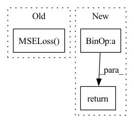

Pattern ID :10792

Before Change
super(fftLoss, self).__init__()
def forward(self, predictions, targets):
return torch.nn.MSELoss(torch.fft.fft(predictions, dim=1), torch.fft.fft(targets, dim=1))
class RhythmNetLoss(nn.Module):
def __init__(self, weight=100.0):
After Change
predictions = torch.fft.fft(predictions, dim=1,norm="forward")
targets = torch.fft.fft(targets, dim=1,norm="forward")
loss = loss_func(predictions, targets)
return loss + neg
class RhythmNetLoss(nn.Module):
In pattern: SUPERPATTERN
Frequency: 3
Non-data size: 3
Instances
Fragment ID: 37160673
Project Name: tvs-ai/pytorch_rppgs
Commit Name: 5f7535fe7cbaa45503473022cacefbe38c9ffb3c
Time: 2022-10-07
Author: kwelcomm@gmail.com
File Name: loss.py
M Class Name: fftLoss
N Class Name: fftLoss
M Method Name: forward(3)
N Method Name: forward(3)
M Parent Class: nn.Module
N Parent Class: nn.Module
M File Name: loss.py
N File Name: loss.py
M Start Line: 120
M End Line: 120
N Start Line: 121
N End Line: 126
'>
Before Change
W, H_profile, B, P = self.forward(x, y, cell_types=cell_types)
B_pred = self.nnls_reg2(H_profile)
criterion = nn.MSELoss()
model_score = criterion(B_pred, B).item()
return model_score
After Change
print(pred.shape)
print(true_prop.shape)
pred = pred/torch.sum(pred, 1, keepdims=True).clamp(min=1e-6)
true_prop = true_prop/torch.sum(true_prop, 1, keepdims=True).clamp(min=1e-6)
loss = ((pred - true_prop)**2).mean()
return loss.detach().item()
'>
Fragment ID: 37160672
Project Name: omicsml/dance
Commit Name: 954e7fcd40b28b359d702e5d3da454b1a7c2ab58
Time: 2022-08-14
Author: venegas5@msu.edu
File Name: dance/modules/spatial/cell_type_deconvo/spotlight.py
M Class Name: SPOTlight
N Class Name: SPOTlight
M Method Name: score(3)
N Method Name: score(4)
M Parent Class:
N Parent Class:
M File Name: dance/modules/spatial/cell_type_deconvo/spotlight.py
N File Name: dance/modules/spatial/cell_type_deconvo/spotlight.py
M Start Line: 264
M End Line: 289
N Start Line: 308
N End Line: 314
'>
Before Change
super(fftLoss, self).__init__()
def forward(self, predictions, targets):
return torch.nn.MSELoss(torch.fft.fft(predictions, dim=1), torch.fft.fft(targets, dim=1))
class RhythmNetLoss(nn.Module):
def __init__(self, weight=100.0):
After Change
predictions = torch.fft.fft(predictions, dim=1,norm="forward")
targets = torch.fft.fft(targets, dim=1,norm="forward")
loss = loss_func(predictions, targets)
return loss + neg
class RhythmNetLoss(nn.Module):
'>
Fragment ID: 37160668
Project Name: tvs-ai/pytorch_rppgs
Commit Name: 5038b3058e9d72d3776d03fdb49feda22ce48213
Time: 2022-12-13
Author: forownsake@gmail.com
File Name: loss.py
M Class Name: fftLoss
N Class Name: fftLoss
M Method Name: forward(3)
N Method Name: forward(3)
M Parent Class: nn.Module
N Parent Class: nn.Module
M File Name: loss.py
N File Name: loss.py
M Start Line: 120
M End Line: 120
N Start Line: 121
N End Line: 126